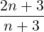
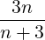

| Up | Next | Prev | PrevTail | Tail |
Binomial coefficients are provided by the binary operator Binomial. The value of Binomial(n, m), where n and m are non-negative integers with n ≥ m, is the number of ways of choosing m items from a set of n distinct items as well, of course, as being the coefficient of xm in the expansion of (1 + x)n.
The function call Binomial(n,m), where n and m are non-negative integers, will return the expected integer value (from Pascal’s triangle). For other real numerical values the result will usually involve the Γ function, but if the switch rounded is ON the Γ functions will be evaluated numerically. This will also be the case for complex numerical arguments if the switch complex is ON. For non-numeric arguments the result returned will involve the original operator binomial, or its pretty-printed equivalent on graphical interfaces.
Stirling numbers of the first and second kind are computed by the binary operators
Stirling1 and Stirling2 respectively using explicit formulae. Stirling1(n,
k) is (−1)n−k × (the number of permutations of the set {1,2,…,n} into exactly k
cycles).
Stirling2(n, k) is the number of partitions of the set {1,2,…,n} into exactly k
non-empty subsets.
Here n and k should be non-negative integers with n ≥ k.
For integer arguments an integer result will be returned, otherwise a result involving the original operator will be returned. Note on graphical user interfaces Stirling1(n,m) and Stirling2(n,m) are rendered as snm and Snm respectively.
Stirling numbers are implemented in the non-core package SPECFN and are not currently autoloading. Before use this package should be loaded with the command:
For more information see here.
A Motzkin number Mn (named after Theodore Motzkin) is the number of different ways of drawing non-intersecting chords on a circle between n points. For a non-negative integer n, the operator Motzkin(n) returns the nth Motzkin number, according to the recursion formula
|
M0 = 1; M1 = 1; Mn+1 =  Mn + Mn−1. |
The recursion is, of course, optimised as a simple loop to avoid repeated computation of lower-order numbers.
For the functions in this and the section below a Quick Reference Table is available. It also includes a list of reserved constants known to REDUCE.
| Up | Next | Prev | PrevTail | Front |